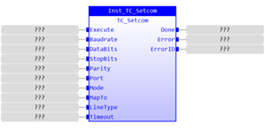
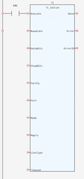

System Function.
Allows the user to configure the serial port parameters and enable communication protocols.
|
Execute: BOOL; |
Rising edge requests execution |
|
Baudrate: TC_COM_BAUDRATE_T; |
Optional parameters include ：tcBaudrate1200, tcBaudrate2400, tcBaudrate4800, tcBaudrate9600, tcBaudrate19200, tcBaudrate38400, tcBaudrate57600, tcBaudrate115200, tcBaudrate128000, tcBaudrate153600, tcBaudrate230400 |
|
DataBits: TC_COM_DATABITS_T; |
Optional parameters include ： tcData7bits, tcData8bits |
|
StopBits: TC_COM_STOPBITS_T; |
Optional parameters include ： tcStop1bit, tcStop2bits |
|
Parity: TC_COM_PARITY_T; |
Optional parameters include ： tcParityNone, tcParityEven, tcParityOdd |
|
Port: TC_COM_PORT_T; |
Optional parameters include ：tcSerialPort1, tcSerialPort2, tcAnyBus50, tcAnyBus51, tcAnyBus52, tcAnyBus53, tcAnyBus54, tcAnyBus55, tcAnyBus56, |
|
Mode: TC_COM_MODE1_T; |
Optional parameters include ： tcMode0: XON/XOFF inactive; tcMode1: XON/XOFF active tcMode4: MODBUS protocol (16-bit Integer) tcMode5: Hostlink Slave tcMode6: Hostlink Master tcMode7: MODBUS protocol (32-bit IEEE floating point) tcMode8: Reserved mode tcMode9: MODBUS protocol (32-bit long word integers) tcMode11: MODBUS RTU master |
|
MapTo: TC_COM_MAPTO_T; |
Optional parameters include ： tcMbMapToTABLE, tcMbMapToVR |
|
LineType: TC_COM_LINETYPE1_T; |
Optional parameters include ： SERIAL4WIRE, SERIAL2WIRE |
|
Timeout: DINT; |
Communications timeout in milliseconds. |
|
Done: BOOL; |
TRUE when function has completed normally |
|
Error: BOOL; |
TRUE if a program error is detected |
|
ErrorID: UINT; |
Returned error number |
When the execute input changes from FALSE to TRUE (rising edge), the Function Block attempts to configure the serial port parameters.
Inst_TC_Setcom(Execute:= (BOOL), Baudrate:= (TC_COM_BAUDRATE_T), DataBits:= (TC_COM_DATABITS_T), StopBits:= (TC_COM_STOPBITS_T), Parity:= (TC_COM_PARITY_T), Port:= (TC_COM_PORT_T), Mode:= (TC_COM_MODE1_T), MapTo:= (TC_COM_MAPTO_T), LineType:= (TC_COM_LINETYPE1_T), Timeout:= (DINT));
(BOOL):=Inst_TC_Setcom.Done;
(BOOL):=Inst_TC_Setcom.Error;
(UINT):=Inst_TC_Setcom.ErrorID;


Not available.